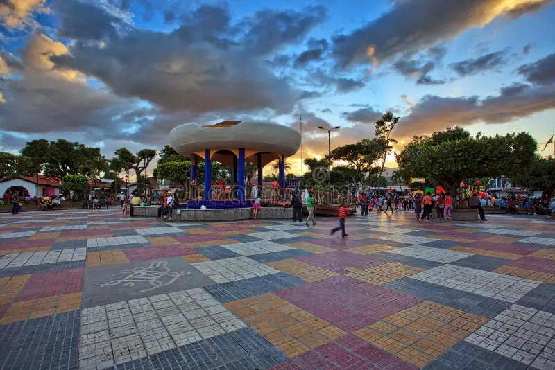
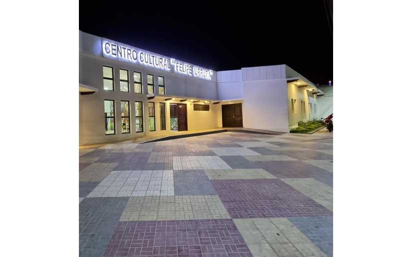
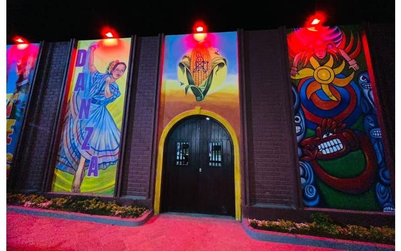
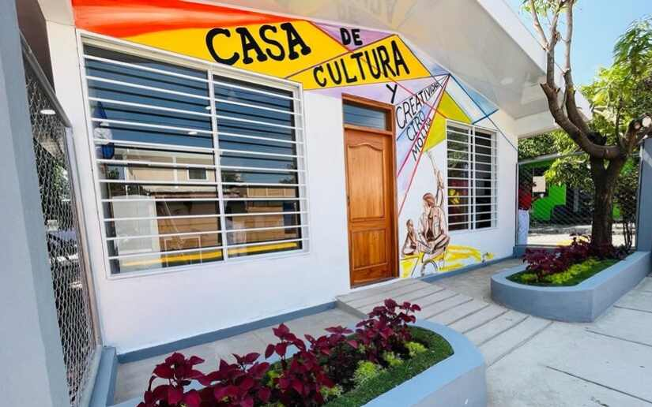

Mapa Cultural de Estelí
Explora los principales puntos culturales de Estelí mediante nuestro mapa interactivo.
🗺️ Mapa interactivo
📍 Lugares del recorrido cultural

🌳 Parque Central 19 de Julio
Punto de partida para descubrir la riqueza cultural, histórica y artística de Estelí.
Ver ubicación
🎨 Centro Cultural Felipe Urrutia
Un espacio cultural que destaca por sus expresiones artísticas y sus murales.
Ver ubicación
🎭 Casa de Cultura Leonel Rugama
Espacio dedicado a la formación artística y la promoción de la cultura.
Ver ubicación
🖌️ Casa de Cultura Ciro Molina
Un espacio dedicado a las artes plásticas, el muralismo y la formación artística.
Ver ubicación🎨 Descubre nuestra cultura
Conoce los espacios que conservan y promueven la identidad artística de Estelí.
🌳 Parque Central 19 de Julio
Nuestro punto de partida. Desde aquí comienza el recorrido para conocer espacios culturales, expresiones artísticas y parte de la identidad de nuestra ciudad.
🎨 Centro Cultural Felipe Urrutia
Un espacio que promueve la cultura y destaca por sus expresiones artísticas y murales representativos de la vida e identidad esteliana.
🎭 Casa de Cultura Leonel Rugama
Espacio dedicado a la formación artística y a la promoción de actividades culturales, como la danza, la música y las artes visuales.
🖌️ Casa de Cultura Ciro Molina
Espacio dedicado a las artes plásticas, el muralismo y el aprendizaje de distintas técnicas artísticas.
🎭 Casa de Cultura Leonel Rugama
Espacio dedicado a diferentes expresiones culturales y artísticas.
Ver ubicación🖌️ Casa de Cultura Ciro Molina
Espacio dedicado a las artes plásticas, muralismo y formación artística.
Ver ubicación